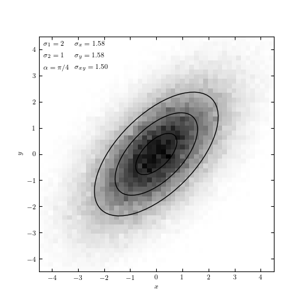

Bivariate Gaussian¶
This demonstrates how to draw a random sample from a correlated bivariate gaussian distribution.

# Author: Jake VanderPlas <vanderplas@astro.washington.edu>
# License: BSD
# The figure produced by this code is published in the textbook
# "Statistics, Data Mining, and Machine Learning in Astronomy" (2013)
# For more information, see http://astroML.github.com
import numpy as np
from matplotlib import pyplot as plt
from matplotlib.patches import Ellipse
from astroML.stats.random import bivariate_normal
#------------------------------------------------------------
# Define the mean, principal axes, and rotation of the ellipse
mean = np.array([0, 0])
sigma_1 = 2
sigma_2 = 1
alpha = np.pi / 4
#------------------------------------------------------------
# Draw 10^5 points from a multivariate normal distribution
#
# we use the bivariate_normal function from astroML. A more
# general function for this is numpy.random.multivariate_normal(),
# which requires the user to specify the full covariance matrix.
# bivariate_normal() generates this covariance matrix for the
# given inputs.
np.random.seed(0)
x, cov = bivariate_normal(mean, sigma_1, sigma_2, alpha, size=100000,
return_cov=True)
sigma_x = np.sqrt(cov[0, 0])
sigma_y = np.sqrt(cov[1, 1])
sigma_xy = cov[0, 1]
#------------------------------------------------------------
# Plot the results
fig = plt.figure(figsize=(6, 6))
ax = fig.add_subplot(111)
# plot a 2D histogram/hess diagram of the points
H, bins = np.histogramdd(x, bins=2 * [np.linspace(-5, 5, 51)])
ax.imshow(H, origin='lower', cmap=plt.cm.binary, interpolation='nearest',
extent=[bins[0][0], bins[0][-1], bins[1][0], bins[1][-1]])
# draw 1, 2, 3-sigma ellipses over the distribution
for N in (1, 2, 3):
ax.add_patch(Ellipse(mean, N * sigma_1, N * sigma_2,
angle=alpha * 180. / np.pi, lw=1,
ec='k', fc='none'))
kwargs = dict(ha='left', va='top', transform=ax.transAxes, fontsize=16)
ax.text(0.02, 0.98, r"$\sigma_1 = %i$" % sigma_1, **kwargs)
ax.text(0.02, 0.93, r"$\sigma_2 = %i$" % sigma_2, **kwargs)
ax.text(0.02, 0.88, r"$\alpha = \pi / %i$" % (np.pi / alpha), **kwargs)
ax.text(0.27, 0.98, r"$\sigma_x = %.2f$" % sigma_x, **kwargs)
ax.text(0.27, 0.93, r"$\sigma_y = %.2f$" % sigma_y, **kwargs)
ax.text(0.27, 0.88, r"$\sigma_{xy} = %.2f$" % sigma_xy, **kwargs)
ax.set_xlabel('x')
ax.set_ylabel('y')
plt.show()